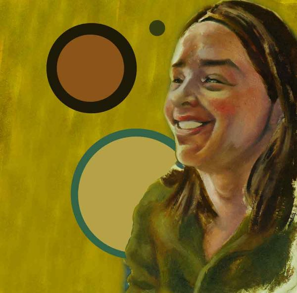

"NICO" is een stripverhaal door Josse Pommo, gebaseerd op het waargebeurde verhaal van de echt bestaande Nico Vandercauwen: een menselijk enigma.
"Volgens mij is Nico een vrouwenhater. Of op zijn minst allergisch."
"Nico kan overal plots opduiken! Volgens mij kan hij teleporteren."
"Heeft Nico een lief?"

"Nico is precies een pion met de allures van een koningin."

Het perfecte kerstcadeau voor uw moeder,
uw broers, zussen, uw vaderen zelfs uw
huisdieren, want Nico is werkelijk ieders vriend!

Het verhaal speelt zich af te Gent, voor sommigen een sociale rioolput maar voor Nico,
zoals alles, een pretpark.